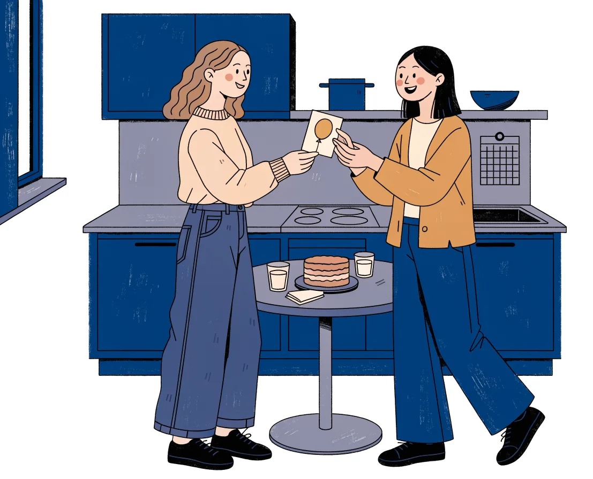
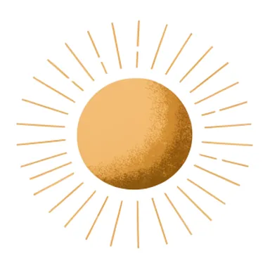
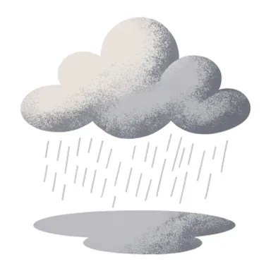
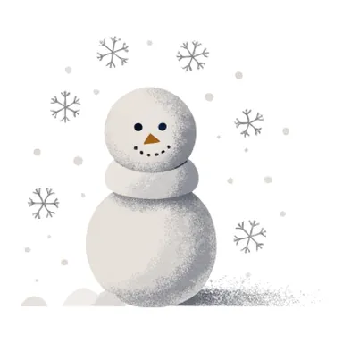
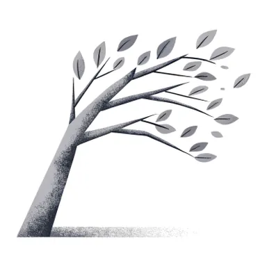
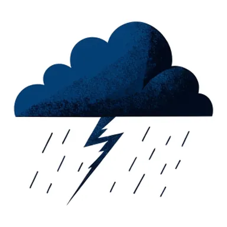
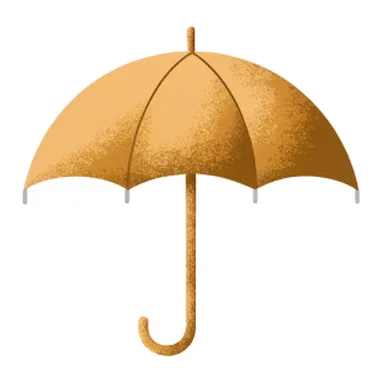
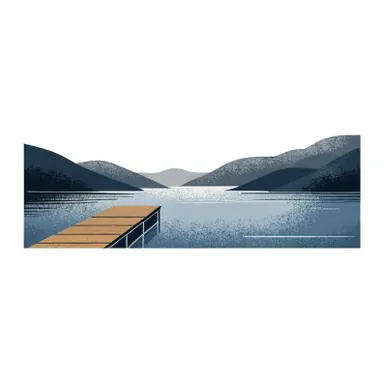
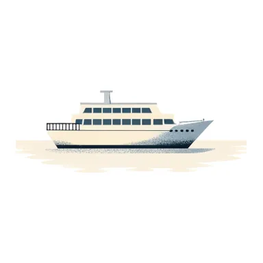
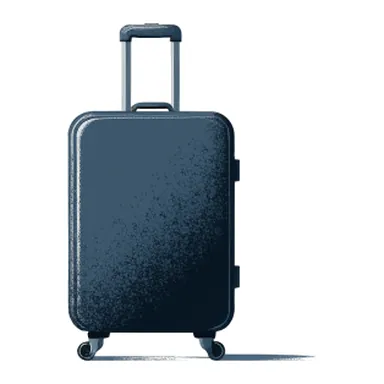

배우기 전에 먼저 해 보세요. 틀려도 괜찮아요.
am 3. Mai는 어떻게 읽을까요?
날짜는 '몇 번째'를 뜻하는 말로 읽어요. 3은 dritt-로 모양이 바뀌어요.
Es regnet.은 무슨 뜻일까요?
der Regen이 비예요.
A1.2 Im Alltag · Lektion 6
초대와 여행
음성은 준비 중이에요. 듣기 단추와 받아쓰기는 음성이 올라오면 쓸 수 있어요. 그동안은 글을 읽으면서 공부해요.

생일 파티, 회사 여름 축제, 주말여행. 독일에서 지내다 보면 초대를 받고 초대할 일이 생겨요. 그럴 때는 날짜를 정확히 말하고, 갈 수 있는지 답하고, 날씨와 여행 계획을 이야기해요.
문법 Datum (am ersten Mai), im, seit, vor, nach, man, und, aber, oder, denn
과제대학학기 말 파티 초대 글 쓰기
과제직장회사 모임 초대에 답장 쓰기
이 과를 마치면 초대하고 초대에 답하고, 날짜와 날씨를 말하고, 여행 계획을 세울 수 있어요.
이 과에서 쓸 말이에요.
배우기 전에 먼저 해 보세요. 틀려도 괜찮아요.
am 3. Mai는 어떻게 읽을까요?
날짜는 '몇 번째'를 뜻하는 말로 읽어요. 3은 dritt-로 모양이 바뀌어요.
Es regnet.은 무슨 뜻일까요?
der Regen이 비예요.
Lektion 5의 낱말 다섯 개를 다시 떠올려 보세요.
저녁, WG 부엌이에요. Lena가 Jiu를 생일 파티에 초대해요. 두 사람은 여름에 함부르크에 가기로 했어요.
들으면서 찾아보세요. Lena의 생일 파티는 어디에서 하나요?
화요일 오전, 사무실이에요. Markus가 Dohyun에게 회사 여름 축제 이야기를 해요.
들으면서 찾아보세요. Dohyun의 가족은 언제 독일에 오나요?
수업이 끝난 뒤 어학원 교실이에요. Frau Becker가 Sora에게 여름휴가 계획을 물어요.
들으면서 찾아보세요. Sora의 가족은 무엇을 타고 가나요?
세 대화를 듣고 답하세요.
Lena의 생일은 언제인가요?
am zwölften Juni라고 했어요.
Lena의 생일 파티는 어디에서 하나요?
비가 오면 집에서 해요.
Jiu bringt kein Geschenk mit.
Doch, natürlich bringe ich ein Geschenk mit!라고 했어요.
회사 여름 축제는 언제인가요?
Dohyun의 가족은 언제 독일에 오나요?
Dohyun ist seit acht Monaten in Deutschland.
Sora의 가족은 무엇을 타고 가나요?
Sora hat ein Hotel gebucht.
호텔이 비싸서 휴가용 집을 예약했어요.
낱말 52개예요. 명사는 der, die, das를 색으로 구분했어요.
das Fest, die Feste 축제, 잔치
Das Fest ist im Garten.축제는 정원에서 해요.
die Einladung, die Einladungen 초대, 초대장
Danke für die Einladung!초대해 줘서 고마워요!
einladen (du lädst ein, hat eingeladen) 초대하다
Ich lade dich ein.초대할게요.
feiern (hat gefeiert) 축하하다, 파티를 하다
Wir feiern im Park.우리는 공원에서 파티를 해요.
zusagen (hat zugesagt) 가겠다고 답하다
Ich sage gern zu.기꺼이 가겠다고 답해요.
der Gast, die Gäste 손님
Die Gäste kommen um vier.손님들은 4시에 와요.
grillen (hat gegrillt) 바비큐를 하다
Im Sommer grillen wir oft.여름에 우리는 바비큐를 자주 해요.
die Musik 음악
Auf dem Fest gibt es Musik.축제에는 음악이 있어요.
der Garten, die Gärten 정원
Der Garten ist hinter der Firma.정원은 회사 뒤에 있어요.
Alles Gute zum Geburtstag! 생일 축하해요!
Alles Gute zum Geburtstag, Lena!생일 축하해요, Lena 씨!
Herzlichen Glückwunsch! 축하해요!
Herzlichen Glückwunsch zum Geburtstag!생일을 진심으로 축하해요!
Viel Spaß! 재미있게 보내요!
Viel Spaß auf der Party!파티에서 재미있게 보내요!
Ich freue mich. 기뻐요, 기대돼요.
Ich freue mich schon.벌써 기대돼요.
doch (아니라는 말에) 아니에요, 그래요
Kommst du nicht? – Doch, ich komme.안 와요? – 아니요, 가요.
wünschen (hat gewünscht) 바라다, 빌어 주다
Ich wünsche dir viel Spaß.재미있게 보내길 바라요.
allein 혼자
Dohyun wohnt allein.Dohyun은 혼자 살아요.
die Jahreszeit, die Jahreszeiten 계절
Welche Jahreszeit gefällt dir?어느 계절이 마음에 들어요?
der Frühling 봄
Im Frühling ist es warm.봄에는 따뜻해요.
der Sommer 여름
Im Sommer ist es lange hell.여름에는 늦게까지 밝아요.
der Herbst 가을
Im Herbst regnet es oft.가을에는 비가 자주 와요.
der Winter 겨울
Im Winter ist es kalt.겨울에는 추워요.
das Datum 날짜
Welches Datum ist heute?오늘이 며칠이에요?

die Sonne 해
Die Sonne scheint.해가 나요.

der Regen 비
Bei Regen feiern wir hier.비가 오면 여기서 파티를 해요.

der Schnee 눈
Im Winter gibt es Schnee.겨울에는 눈이 와요.

der Wind 바람
Der Wind ist kalt.바람이 차요.

das Gewitter, die Gewitter 천둥 번개가 치는 날씨
Am Abend gibt es ein Gewitter.저녁에 천둥 번개가 쳐요.

der Regenschirm, die Regenschirme 우산
Nimm einen Regenschirm mit!우산을 챙겨요!
der Grad (온도) 도
Heute sind es 25 Grad.오늘은 25도예요.
Es regnet. 비가 와요.
Heute regnet es.오늘은 비가 와요.
Es schneit. 눈이 와요.
Im Januar schneit es.1월에는 눈이 와요.
warm 따뜻한
Im Juni ist es warm.6월에는 따뜻해요.
kalt 추운, 찬
Heute ist es kalt.오늘은 추워요.
heiß 더운, 뜨거운
Im August ist es heiß.8월에는 더워요.
sonnig 화창한
Morgen ist es sonnig.내일은 화창해요.
windig 바람이 부는
In Hamburg ist es oft windig.함부르크에는 바람이 자주 불어요.

der See, die Seen 호수
Konstanz ist am Bodensee.콘스탄츠는 보덴 호숫가에 있어요.
das Meer, die Meere 바다
Ich war noch nie am Meer.바다에 아직 한 번도 못 가 봤어요.
der Berg, die Berge 산
In den Bergen kann man wandern.산에서는 걷기 여행을 할 수 있어요.
das Hotel, die Hotels 호텔
Das Hotel ist sehr teuer.그 호텔은 아주 비싸요.
die Ferienwohnung, die Ferienwohnungen 휴가용 집
Wir haben eine Ferienwohnung gebucht.우리는 휴가용 집을 예약했어요.

das Schiff, die Schiffe 배
Hana möchte mit dem Schiff fahren.Hana는 배를 타고 싶어 해요.
das Flugzeug, die Flugzeuge 비행기
Das Flugzeug kommt um neun an.비행기는 9시에 도착해요.

der Koffer, die Koffer 여행 가방
Mein Koffer ist zu klein.제 여행 가방은 너무 작아요.
die Fahrt, die Fahrten (타고 가는) 길, 운행
Die Fahrt dauert vier Stunden.가는 데 네 시간 걸려요.
die Postkarte, die Postkarten 엽서
Ich schreibe dir eine Postkarte.엽서 보낼게요.
buchen (hat gebucht) 예약하다
Hast du das Hotel gebucht?호텔 예약했어요?
dauern (hat gedauert) (시간이) 걸리다
Wie lange dauert die Fahrt?가는 데 얼마나 걸려요?
fliegen (ist geflogen) 비행기로 가다
Wir sind nach Korea geflogen.우리는 비행기로 한국에 갔어요.
mitnehmen (du nimmst mit, hat mitgenommen) 가져가다, 챙기다
Nimm eine Jacke mit!재킷을 챙겨요!
bald 곧
Bald sind Sommerferien.곧 여름 방학이에요.
meistens 대체로
Im August ist es meistens warm.8월에는 대체로 따뜻해요.
이 과의 낱말로 여덟 문제를 풀어요.
달 이름은 모두 der예요. '몇 월에'는 im Januar, im Juli처럼 im을 붙여요.
'며칠에'는 am 뒤에 -ten이나 -sten으로 끝나는 말을 붙여요. 글로 쓸 때는 am 3. Juli처럼 숫자 뒤에 점을 찍어요.
날씨는 es로 시작하는 문장으로 말해요.
규칙
날짜는 '몇 번째'를 뜻하는 말로 읽어요. 1부터 19까지는 수 뒤에 -te를, 20부터는 -ste를 붙여요. '오늘은 며칠이다'는 der …te, '며칠에'는 am …ten으로 말해요. 1, 3, 7, 8은 모양이 조금 달라요. 21일은 der einundzwanzigste, 31일은 der einunddreißigste예요.
| 수 | der … | am … |
|---|---|---|
| 1. | erste | ersten |
| 2. | zweite | zweiten |
| 3. | dritte | dritten |
| 7. | siebte | siebten |
| 8. | achte | achten |
| 12. | zwölfte | zwölften |
| 20. | zwanzigste | zwanzigsten |
| 30. | dreißigste | dreißigsten |
주의 '며칠부터 며칠까지'는 vom … bis zum …으로 말해요. vom ersten bis zum fünften Mai. 날짜를 물을 때는 Wann hast du Geburtstag? 또는 Welches Datum ist heute?라고 해요.
규칙을 보고 바로 확인해 보세요.
am 7. Mai는 어떻게 읽나요?
규칙
때를 나타내는 말은 종류에 따라 앞에 붙는 말이 달라요. 달과 계절은 im, 요일과 날짜는 am, 시각은 um이에요. seit는 그때부터 지금까지 이어지는 일, vor는 '~ 전에' 끝난 일, nach는 '~ 뒤에'를 말해요.
| 말 | 예 | 뜻 |
|---|---|---|
| im | im Juni, im Sommer | 6월에, 여름에 |
| am | am Freitag, am dritten Juli | 금요일에, 7월 3일에 |
| um | um fünf Uhr | 5시에 |
| seit | seit acht Monaten | 여덟 달 전부터 지금까지 |
| vor | vor acht Monaten | 여덟 달 전에 |
| nach | nach dem Kurs | 수업 뒤에 |
주의 seit는 지금도 이어지는 일이라서 지금의 동사 모양과 써요. Ich wohne seit acht Monaten hier. vor는 끝난 일이라서 Perfekt와 써요. Ich bin vor acht Monaten gekommen. seit와 vor 뒤에서 여럿을 나타내는 말에는 -n이 붙어요. acht Monate가 seit acht Monaten이 돼요.
규칙을 보고 바로 확인해 보세요.
달과 계절 앞에는 무엇을 쓰나요?
규칙
man은 정해지지 않은 사람, '누구나'나 '사람들'을 뜻해요. 한국어로는 주어 없이 옮길 때가 많아요. 동사는 er, sie와 같은 모양을 써요.
| man | 동사 | 나머지 |
|---|---|---|
| Man | kann | hier parken. |
| Man | isst | um zwölf. |
| Hier | darf | man nicht rauchen. |
주의 man과 der Mann은 다른 말이에요. man은 소문자로 쓰고 n이 하나예요. 규칙이나 할 수 있는 일을 물을 때 편해요. Kann man hier mit Karte zahlen? Wie sagt man das auf Deutsch?
규칙을 보고 바로 확인해 보세요.
Hier … man gut essen. 빈칸에 알맞은 말은 무엇인가요?
규칙
und, aber, oder, denn은 문장과 문장을 이어요. 이 말들은 자리를 차지하지 않아요. 그래서 뒤에 오는 문장의 낱말 순서는 그대로예요. 주어가 오고 동사가 와요.
| 말 | 뜻 | 예 |
|---|---|---|
| und | 그리고 | …, und wir grillen. |
| aber | 하지만 | …, aber es regnet. |
| oder | 아니면 | … oder mit dem Auto? |
| denn | 왜냐하면 | …, denn ich bin krank. |
주의 aber와 denn 앞에는 쉼표를 찍어요. denn은 이유를 덧붙일 때 써요. Ich komme nicht, denn ich muss arbeiten. 앞 문장과 주어가 같으면 und 뒤의 주어를 빼도 돼요. Man isst zusammen und trinkt etwas.
규칙을 보고 바로 확인해 보세요.
이유를 말할 때 쓰는 말은 무엇인가요?
듣고 알맞은 것을 고르세요.
Lena의 생일은 언제인가요?
Ich habe am zwölften Juni Geburtstag.
오늘 날씨는 어떤가요?
Heute regnet es. Wir bleiben zu Hause.
Sora의 가족은 언제 돌아오나요?
Wir fahren vom zehnten bis zum siebzehnten Juli nach Konstanz.
Dohyun은 프랑크푸르트에 산 지 얼마나 됐나요?
Ich wohne seit acht Monaten in Frankfurt.
라디오에서 주말 날씨를 알려 줘요. 듣고 알맞은 것을 고르세요.
Das Wetter am Wochenende
Radio Und jetzt das Wetter für das Wochenende.
Radio Am Samstag regnet es in Frankfurt. Es sind nur vierzehn Grad.
Radio Am Sonntag scheint die Sonne, und es ist warm. Es sind dreiundzwanzig Grad.
Radio In Hamburg ist es am Sonntag windig, aber es regnet nicht.
토요일에 프랑크푸르트 날씨는 어떤가요?
일요일에 프랑크푸르트는 몇 도인가요?
Wie ist das Wetter am Sonntag in Hamburg?
회사에서 온 초대 메일이에요. 읽고, 맞으면 richtig, 틀리면 falsch를 고르세요.
Einladung zum Sommerfest
Liebe Kolleginnen und Kollegen,
am Freitag, 3. Juli, feiern wir unser Sommerfest. Wir laden Sie alle ein!
Das Fest fängt um 17 Uhr an. Wir feiern im Garten hinter der Firma. Bei Regen feiern wir in der Firma.
Es gibt Fleisch und Gemüse vom Grill, Salate und Kuchen. Man kann auch die Familie mitbringen.
Bitte sagen Sie bis zum 20. Juni zu oder ab.
Viele Grüße
Sabine Schulz
Das Sommerfest ist am dritten Juli.
Das Fest fängt um fünf Uhr an.
17 Uhr는 오후 5시예요.
Bei Regen gibt es kein Fest.
비가 오면 회사 안에서 해요.
Man darf die Familie nicht mitbringen.
가족을 데려와도 된다고 했어요.
Man muss bis zum zwanzigsten Juni antworten.
날짜를 읽을 때 알맞은 말을 고르세요.
Lena hat am Juni Geburtstag.
Heute ist der Juli.
Das Sommerfest ist am Juli.
Wir fahren vom bis zum siebzehnten Juli.
Am Mai arbeiten wir nicht.
Mein Geburtstag ist am März.
때를 나타내는 알맞은 말을 고르세요.
August fahren wir nach Hamburg.
Das Fest ist Freitag.
Die Party fängt vier Uhr an.
Ich wohne acht Monaten in Frankfurt.
Sora ist sechs Monaten nach Deutschland gekommen.
dem Kurs gehe ich nach Hause.
Winter ist es kalt.
man 뒤에 알맞은 동사를 고르세요.
Am Bodensee man schwimmen.
보덴 호수에서는 수영할 수 있어요.
In Deutschland man viel Brot.
독일에서는 빵을 많이 먹어요.
Hier man nicht rauchen.
여기서는 담배를 피우면 안 돼요.
Im Sommer man oft im Garten.
여름에는 정원에서 바비큐를 자주 해요.
문장을 잇는 알맞은 말을 고르세요.
Im Juni ist es warm, wir können grillen.
6월에는 따뜻하고, 바비큐를 할 수 있어요.
Ich komme gern, ich kann nicht lange bleiben.
기꺼이 가지만 오래 있을 수는 없어요.
Wir nehmen eine Ferienwohnung, Hotels sind teuer.
휴가용 집으로 해요. 호텔이 비싸거든요.
Fahren wir mit dem Zug mit dem Auto?
기차로 갈까요, 아니면 자동차로 갈까요?
Dohyun kommt nicht, er ist krank.
Dohyun은 오지 않아요. 아프거든요.
낱말을 순서대로 눌러 문장을 만드세요.
6월 12일이 제 생일이에요.
8월에 우리는 함부르크에 가요.
거기서는 수영할 수 있어요.
저는 여기 산 지 여덟 달 됐어요.
가족을 데려가도 되나요?
달과 계절을 짝지으세요.
빈칸에 알맞은 낱말을 쓰세요.
Es . Nimm einen Regenschirm mit!
비가 와요. 우산을 챙겨요!
Im Winter ist es .
겨울에는 추워요.
Danke für die !
초대해 줘서 고마워요!
Alles Gute zum !
생일 축하해요!
듣고 그대로 써 보세요.
음성 준비 중Ich lade dich ein. 초대할게요.
음성 준비 중Am dritten Juli ist das Sommerfest. 7월 3일에 여름 축제가 있어요.
음성 준비 중Im Sommer ist es warm. 여름에는 따뜻해요.
Ich mache eine Party. Ich lade dich ein! 파티를 해요. 초대할게요!
Kommst du auch? 같이 올래요?
Wir laden Sie zum Sommerfest ein. 여름 축제에 초대합니다.
Danke für die Einladung! 초대해 줘서 고마워요!
Ich komme gern. 기꺼이 갈게요.
Soll ich etwas mitbringen? 뭘 가져갈까요?
Wann fängt die Party an? 파티는 몇 시에 시작해요?
Ich kann leider nicht kommen. 아쉽지만 못 가요.
Ich bin im Juli im Urlaub. 7월에는 휴가 중이에요.
Schade! Vielleicht nächstes Mal. 아쉬워요! 다음에는 꼭 가요.
Wann hast du Geburtstag? 생일이 언제예요?
Am zwölften Juni. 6월 12일이에요.
Vom zehnten bis zum siebzehnten Juli. 7월 10일부터 17일까지예요.
Seit acht Monaten. 여덟 달 됐어요.
Wie ist das Wetter? 날씨가 어때요?
Die Sonne scheint. 해가 나요.
Es regnet. 비가 와요.
Es ist warm und sonnig. 따뜻하고 화창해요.
Wir fahren im Juli nach Konstanz. 7월에 콘스탄츠에 가요.
Wir fahren mit dem Zug. 기차로 가요.
Die Fahrt dauert vier Stunden. 가는 데 네 시간 걸려요.
Man kann dort schwimmen und wandern. 거기서는 수영하고 걸을 수 있어요.
과제 고르기
역할 대화와 말하기, 쓰기 과제는 대학 생활과 직장 생활 두 가지예요. 하나를 고르면 다음 과에서도 그쪽 과제가 나와요. 언제든 바꿀 수 있어요.
대화 A에서 역할을 하나 고르세요. 상대의 말은 글로 읽고, 내 차례에는 직접 말해요.
대화 B에서 역할을 하나 고르세요. 상대의 말은 글로 읽고, 내 차례에는 직접 말해요.
내 생일과 가고 싶은 여행을 떠올리고 칸을 채우세요. 생일은 am zwölften März처럼, 달은 August처럼 써요. 완성된 문장을 소리 내어 읽어 보세요.
Ich habe am zwölften März Geburtstag.
Im August möchte ich nach Hamburg fahren.
Dort ist es im August warm und sonnig.
어학 과정이 끝나는 날, 같은 반 사람들과 파티를 하려고 해요. 내가 준비를 맡았어요.
파티는 7월 17일 금요일 저녁 6시에 대학 뒤 공원에서 해요. 7월에는 따뜻해서 밖에서 하기 좋아요. 비가 오면 교실에서 해요. 저마다 샐러드나 케이크를 하나씩 가져와요.
같은 반의 Jiu가 학기 말 파티에 대해 물어요. 쪽지를 보고 답하세요. 친구끼리는 du를 써요. 질문을 듣고 소리 내어 답한 뒤 예시 답과 비교해 보세요.
Du machst eine Party? Wann ist sie? 파티를 한다면서요? 언제예요?
Ja! Die Party ist am siebzehnten Juli.
Wo feiern wir? 어디에서 해요?
Wir feiern im Park hinter der Universität, denn im Juli ist es warm.
Und bei Regen? 비가 오면요?
Bei Regen feiern wir im Kursraum.
Soll ich etwas mitbringen? 뭘 가져갈까요?
Ja, bring bitte einen Salat oder einen Kuchen mit.
Wann fängt die Party an? 몇 시에 시작해요?
Sie fängt um sechs Uhr an. Kommst du?
Eine Einladung zur Party
같은 반 사람들에게 학기 말 파티 초대 글을 써 보세요. 여섯 문장이면 충분해요.
Liebe Freundinnen und Freunde, unser Kurs ist bald fertig, und wir machen eine Party! Wir feiern am Freitag, 17. Juli, um 18 Uhr im Park hinter der Universität. Bei Regen feiern wir im Kursraum. Bitte bringt einen Salat oder einen Kuchen mit. Kommt ihr? Schreibt mir bitte bis zum 10. Juli. Viele Grüße, Minji
다 쓴 뒤에 확인해 보세요.
회사에서 여름 축제 초대 메일을 받았어요. 휴게실에서 Markus가 갈 건지 물어요.
축제는 7월 3일 오후 5시에 회사 뒤 정원에서 해요. 비가 오면 회사 안에서 해요. 나는 갈 거예요. 가족은 아직 한국에 있어서 혼자 가요. 독일에 온 지는 1년 됐어요.
동료 Markus가 여름 축제에 대해 물어요. 쪽지를 보고 답하세요. Markus와는 du를 써요. 질문을 듣고 소리 내어 답한 뒤 예시 답과 비교해 보세요.
Hast du die Einladung zum Sommerfest gelesen? 여름 축제 초대 메일 읽었어요?
Ja, ich habe sie gelesen. Das Fest ist am dritten Juli.
Kommst du? 올 거예요?
Ja, ich komme gern.
Bringst du deine Familie mit? 가족도 데려와요?
Nein, meine Familie ist noch in Korea. Ich komme allein.
Schade. Seit wann bist du in Deutschland? 아쉽네요. 독일에 온 지 얼마나 됐어요?
Seit einem Jahr.
Was machen wir bei Regen? 비가 오면 어떻게 해요?
Bei Regen feiern wir in der Firma.
Eine Antwort auf die Einladung
여름 축제 초대 메일에 답장을 써 보세요. 다섯 문장이면 충분해요.
Liebe Frau Schulz, vielen Dank für die Einladung zum Sommerfest. Ich komme gern. Meine Familie ist leider noch in Korea, aber im August kommt sie nach Deutschland. Ich komme allein. Soll ich etwas mitbringen? Viele Grüße, Minji Choi
다 쓴 뒤에 확인해 보세요.
Ich kann jemanden einladen und auf eine Einladung antworten.초대하고 초대에 답할 수 있어요.
Ich kann das Datum sagen und über das Wetter sprechen.날짜를 말하고 날씨 이야기를 할 수 있어요.
Ich kann eine Reise planen und beschreiben.여행을 계획하고 설명할 수 있어요.
Ich kann Sätze mit und, aber, oder und denn verbinden.und, aber, oder, denn으로 문장을 이을 수 있어요.